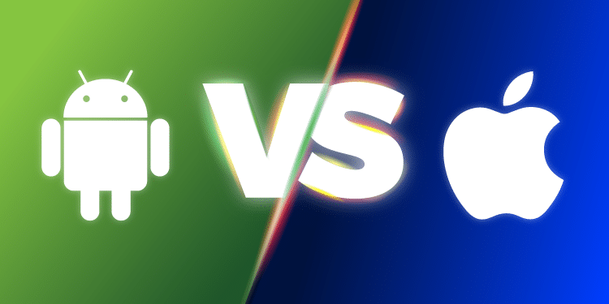

All the fuss between Android and iOS
Android and iOS are the two most popular operating systems installed worldwide. Launched almost a decade and a half ago, both of them are built to perform almost same functions in smartphones, smartwatches, tablets,TV and in case of iOS it extends to iPhones . Both the systems have undergone various updates to match their counterparts and hence have left the audience struggling to choose between the two. The below article provides with the comparison of various features of android and iOS.

Android
Android is an operating system developed in 2008 by a group of firms gathered together to develop open standards for mobile devices. Sponsored by Google, its the most widely used operating system followed by iOS.
iOS
iOS is an operating system developed in 2007 by Apple exclusively for its hardware. It is the basis for other three operating systems produced by Apple: iPadOS, tvOS and watchOS. It has an excellent UI and fluid responsiveness that provides user experience like no other
Key Differences
1.Kernel :
A Kernel is the core of an OS that facilitates interaction between the hardware and software systems. It provides basic services such as process, memory management, file systems, device control and networking. The Android Kernel is Linux based and easily customisable. On the other hand, the iOS is a hybrid model called XNU,a Darwin based model, based off of Unix, developed by Apple itself. The two kernels differ in their uptime, stability and accessibility. And iOS is relatively stable compared to Android and has a better uptime. This basically creates a varying user experience. Also, android OS source code has been made open while apple closely guards theirs.
2.Exclusivity :
Android is an open source model suited for almost all hardware systems by various companies. Its openness has never been better.An example would be Internet Of Things where any smart device, irrespective of their brands can be connected to form an ecosystem and can interact with each other. iOS, on the other hand is at the centre of the most coveted closed model that runs almost exclusively on their own hardware.Only in recent times, there are options for both the systems to function together but still have to bear the rigid nature of iOS. Eg.Android Tv remote application available in apple store can be used to control TV. But in case of sharing information among devices outside of its ecosystem, it still has a long road to catch up with android.
3.Third party applications :
One of the main attraction for iOS users is that it limits third party applications and most of their key functions are done by inbuilt or first party applications baked into their OS such as iMessage, FaceTime, etc. Other than that, recent updates of Safari by Apple has enabled blocking of all third party cookies that prevents various websites from following you or tracking your activity. Whereas in android, there is no such provision. This is further amped up by rigid approval policy of applications by Apple. Every single app and their update is reviewed by Apple before it is published. Also there is a myth that Apple doesn’t allow third party applications. iOS does allow third party applications provided they pass through their security scrutiny.
4.Security :
Blocking of third party applications comes in handy for security purposes. The exclusivity in iOS and its stringent application approval process almost gives place for no threats. Studies suggest that android is more prone to malware threats than iOS. Its because of its global popularity and open approach. Also, Apple’s hardware and software are inseparable and has complete control over each other making them less vulnerable. Apple also provides features such as iCloud lock, which has got even better with the new Find My application that forbids unauthorised use of iOS, macOS, iPadOS and watchOS. On the other hand, Android has an easy go application approval process. Beyond that, security also depends on the hardware its running on. Since android is inclusive, the security also varies with the manufacturers. Eg.Samsung KNOX 2.0 provides a more secure booting process but cannot be said for others.
5.Performance :
The performance of iOS is relatively better in the longer run whereas most android doesn’t show such promise. Apple processors are designed to work perfectly with the few devices that apple makes. Controlling both the software and hardware sides, iOS and macOS are optimised to acquire greater efficiency out of their system. Eg.Apple has made Safari as their default browser since it consumes lesser battery than Google Chrome. Performance also depends on the processors used. 2-core iOS processors are faster than 8-core android processors. Also when it comes to memory handling, iPhone 6 with 1GB of RAM can easily outperform an android mobile with 3GB of RAM. This is because Android performs a function called Garbage collection that consumes hefty battery and memory. iOS on the other hand is designed to avoid garbage collection. Nevertheless, Apple also supports 6 year software updates whereas Android provides for a maximum of only two. This further varies with different manufacturers providing different update support. Also when it comes to battery life, iOS, once again is efficient than android providing lengthier battery life in 3000mh compared to 5000mAh in Android or even greater.
6.Interaction with other devices :
iOS is a closed ecosystem which provides better interaction among iPhones, iPads, MacOS and other exclusive gadgets. It has tools like Airdrop that facilitates faster interaction among the Apple devices. Android, on the other hand, being almost interoperable on any smart device, offers better interaction options. Eg. Siri is only built-in for Apple Homepads, while google assistant can be downloaded even in iOS. Other great example that validates the interaction of Android with other devices is Smart Home integration where devices of any manufacturing can communicate with each other hassle free.
7.Rooting and Jailbreaking :
Rooting, also known as root access, in android lets user takes complete control over the mobile OS such as exploiting a bug, or a flaw indesign or configuration oversight and unlocking the boot loader. It is the last resort mechanism that can remove or replace the complete operating system of the device. Rooting in iOS can be identified as Jailbreaking which is also similar to android but by by-passing various restrictions put by Apple by exploiting vulnerabilities and adapting to prohibited activities such as side loading.
8.Cloud services :
Cloud storage and automatic backups are a must for any gadget we work on. Android offers a cloud service of 15GB for free and cross-platform support. You can use Google Drive on macOS and iOS. Whereas Apple provides only 5GB storage space and only supports iOS,MacOS and Windows. iCloud is not available in android but can be accessed through web.
9.Alternative App stores :
Android is feasible with app stores other than the designated ones. We can download apps from stores other than Play Store and easy to sideload. Sideloading in iOS can be done only by jailbreaking and it exploits the credibility of the system.
10.Accessibility :
Accessibility is one of the key determinants of any OS that ultimately appeals the users.Smartphones usually adopt to Direct Manipulation Interface that helps the users to interact with the device. iOS is simpler to use because of its uniformity across all the devices.It consists of tools such as Voiceover that enables the user to interact with the device without manually accessing the screen. It also offers a range of options to customise your device but to some extent. Widgets are key accessibility features that displays customised app sets that are placed on the home screen for easy use. Though android has enabled widgets in their OS almost from the initial days and Apple has only recently developed them in iOS 14, they have surpassed android with their first party widgets. Also, downloading from a browser and accessing a file can be a real pain in iOS. For example, we can set any ringtone baked inside the OS free of cost but on the other hand, we have to buy ringtones of our choice from the store and it costs extra. Files accessibility is another field where iOS have to focus more. The reason for this is iOS apps are enforced to sandboxing so they are restricted from accessing files stored by other apps. It offers a protection bubble where are apps are prohibited from communicating with each other and exchange data amongst each other. Hence the concept of a File manager is a violation of their memory management policy. Any file to be saved is saved to iCloud and can be accessed locally. Though it has Files app, it cannot be equated with Files explorer in Android that helps organise files just like in Desktop PC. Android on the contrary, lets us walk all over it. Files explorer by Android can store files from browsers and can be accessed anywhere.
11. Voice Assistants :
Voice assistants are the game changers that have evolved in the recent past. Performing trivial tasks without having to resort to manual operation is what voice assistants are all about. iOS voice assistant, Siri is more straightforward in performing tasks such as calendar appointments, making calls, messaging, mailing, browsing, music playing and so on almost accurately with your voice command. It is baked into the system and hence offer smooth hassle free functions. It is available in iOS and macOS alone. Google Assistant is a step ahead of Siri. It is best at general knowledge and can be downloaded for iOS.
Conclusion : Verdict on iOS vs Android
Having discussed the differences and similarities, we can see that both the platforms have their own edges and flaws. Choosing android or iOS solely depends on what we want in a smartphone. If you are willing to compromise eye-catching features and specifications for security and reliability and don’t mind paying a bit extra, iOS should be your thing. On the contrary, if you want to choose a device that is interoperable with other smart gadgets, android is your solution. After all, it all comes down to what we desire.